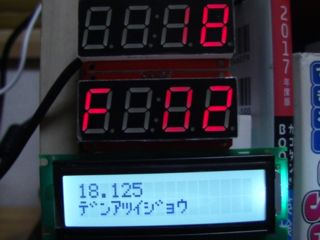

LCDにMAX31856の情報を表示させた
前回、文字列をLCDに表示することができるようになったので、今度は、LCDにリアルタイムな情報を表示させてみる。
MAX31856の情報をLCDに表示させる。

max31856.pyにLCD用のfunctionを追加
def analyze_fault_for_LCD(self,code):
moji = ""
if code & 1:moji +="ダンセン "
if code & 2:moji += "デンアツイジョウ "
if code & 4:moji +="オンドカゲン "
if code & 8:moji +="オンドジョウゲン "
if code & 16:moji +="レイセッテンオンドシタスギ "
if code & 32:moji +="レイセッテンオンドウエスギ "
if code & 64:moji +="レイセッテン シヨウハンイゴエ "
if code & 128:moji +="ネツセッテン シヨウハンイゴエ"
return moji
呼び出し側
import math
import sys
sys.path.append("/home/pi/src/sys_kama")
from ht16k33 import Ht16k33
from max31856 import Max31856
from acm1602 import ACM1602
import time
import threading
def mes_pri(spi,ht,gyou):
temps = spi.read()
#print(temps)
if temps["FAULT"] == 0:
temp = temps["HJ"]*0.0625
tempHT =str(math.floor(temp))
tempACM = str(temp)
else:
# spi.analyze_fault(temps["FAULT"])
tempACM = spi.analyze_fault_for_LCD(temps["FAULT"])
tempHT = "F-"+("0"+str(temps["FAULT"]))[-2:]
ht.print(tempHT,2)
if gyou == 1:
acm.line1()
elif gyou == 2:
acm.line2()
acm.sendMessage(tempACM)
time.sleep(1)
DEVICE_BUS = 1
DEVICE_ADDR0 = 0x71
DEVICE_ADDR1 = 0x70
ht0 = Ht16k33(DEVICE_BUS,DEVICE_ADDR0)
ht1 = Ht16k33(DEVICE_BUS,DEVICE_ADDR1)
SPI = 0
CE0 = 0
CE1 = 1
spi0 = Max31856(SPI,CE0)
spi1 = Max31856(SPI,CE1)
acm = ACM1602()
acm.sendMessage("FAULT")
acm.displayOnOffControl.set(acm.DisplayOnOffControl.DISPON_CURSOROFF_BLINKOFF)
while True:
mes_pri(spi0,ht0,1)
mes_pri(spi1,ht1,2)
time.sleep(1)
max31856.pyにFAULTの文字列を用意させて、ACM1602.py側で、それを表示させている
以上
がらめきドットコムPowered by RaspberryPi3B+ Raspbian stretch